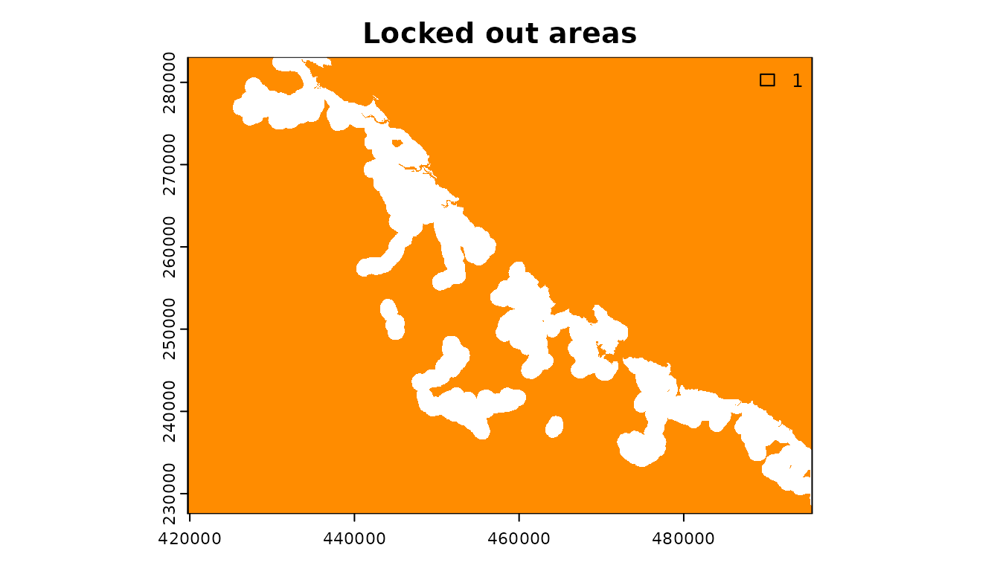
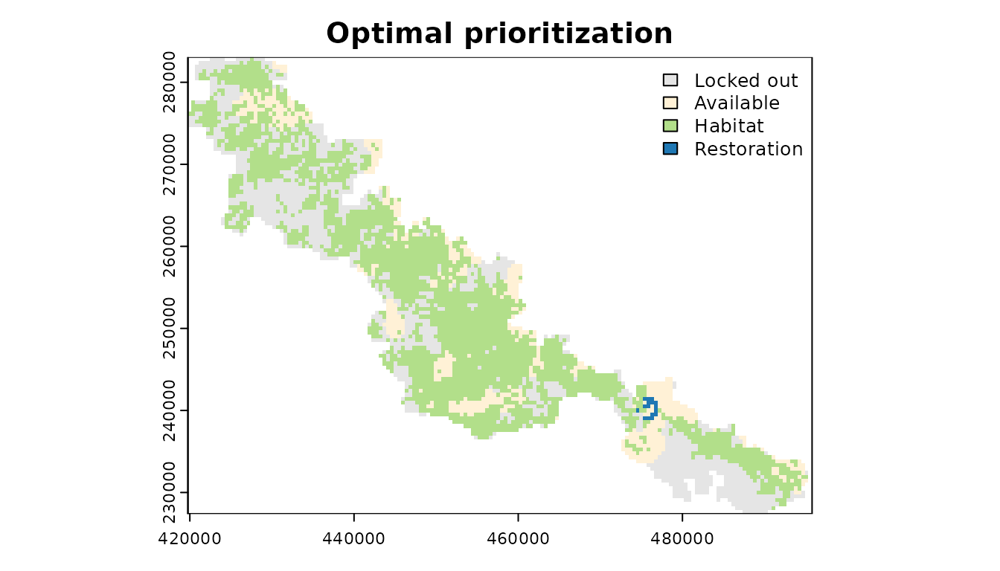
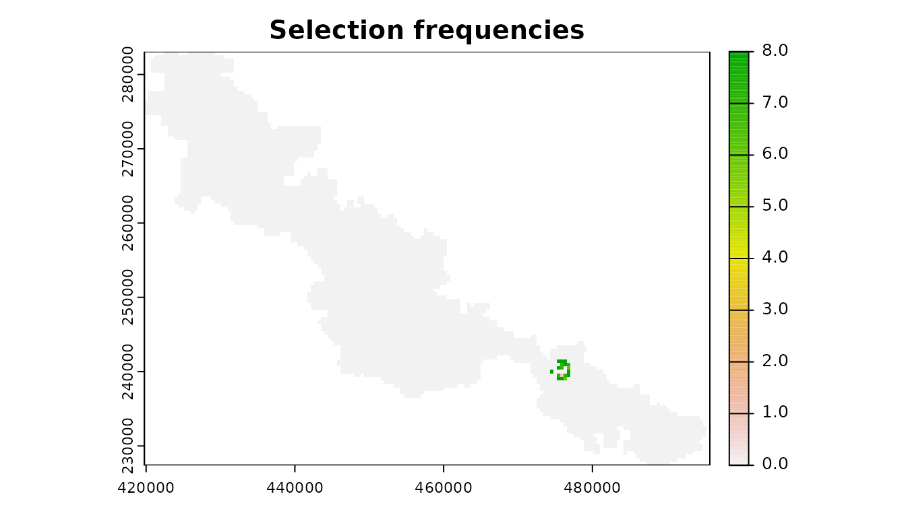
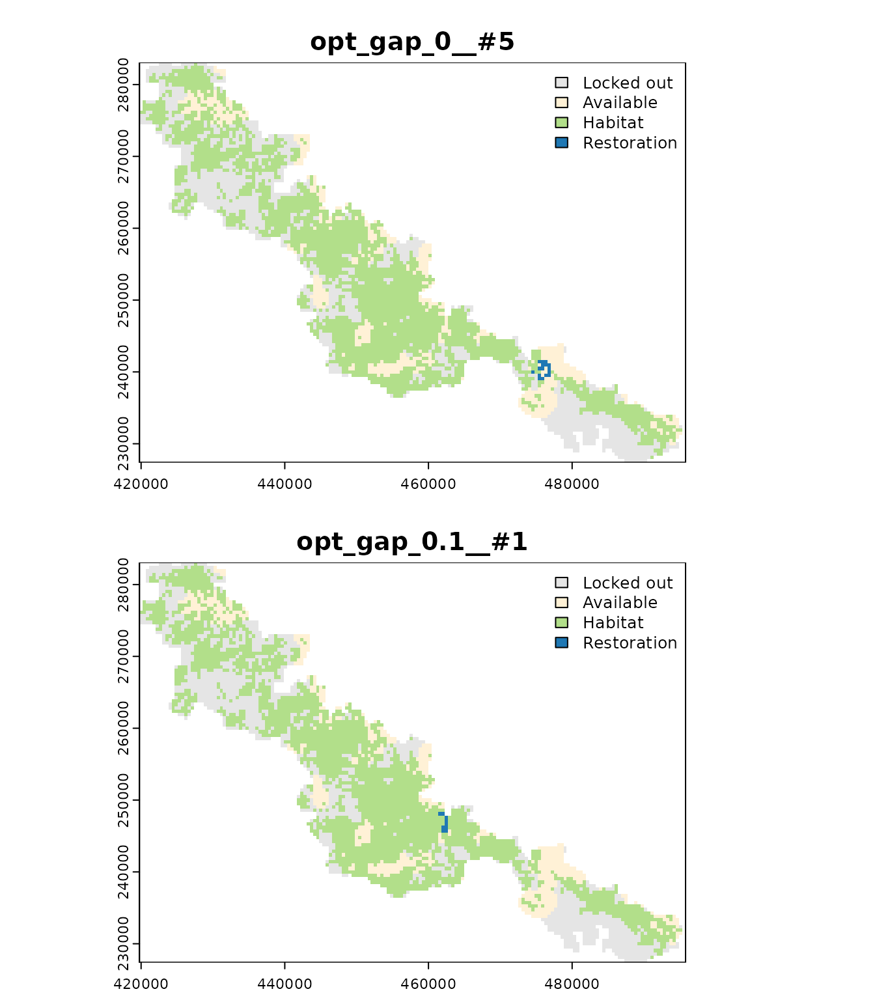

Introduction
Habitat restoration is urgently need to prevent further declines in biodiversity (Chazdon et al. 2017; Strassburg et al. 2020). Since the resources available for restoring habitat are limited, plans for restoring habitat (hereafter, “restoration prioritizations”) need to achieve conservation objectives for minimal cost (Strassburg et al. 2019). Indeed, restoration prioritizations need to strategically site restoration actions in places that will enhance connectivity among remaining habitats (Correa Ayram et al. 2016). They also need to account for existing land-use constraints that prevent such actions for being implemented in particular places (e.g., places that are too heavily modified for conservation activities) (Margules & Pressey 2000). Since accounting for these considerations and exploring trade-offs between them can be difficult, decision support tools can play an important role in conservation decision making (Flower et al. 2020; Janßen et al. 2019; Jumin et al. 2018).
Here we provide a tutorial for using the restoptr R package for ecological restoration planning. Briefly, it it uses optimization algorithms to generate restoration prioritizations (based on Justeau-Allaire et al. 2021). They can be identified by maximizing landscape indices, such as the effective mesh size (Jaeger 2000), or the integral index of connectivity (Pascual-Hortal & Saura 2006). Additionally, constraints can be used to ensure that priority areas exhibit particular characteristics (e.g., ensure that particular places are not selected for restoration, ensure that priority areas form a single contiguous network). Furthermore, multiple near-optimal solutions can be generated to explore multiple options in restoration planning. The package leverages the Choco-solver software to perform optimization using constraint programming (CP) techniques (Prud’homme et al. 2016).
Setup
Let’s setup our R session for the tutorial. Here, we will load the restoptr R package. We will also load the terra R package for working with raster data, and the vegan and cluster R packages for comparing prioritizations. Additionally, we will set the seed for the random number generator to help ensure consistent results.
# load packages
library(restoptr)
library(terra)
library(vegan)
library(cluster)
# set seed for reproducibility
set.seed(500)Since the package needs Java to work, let’s verify that Java is installed.
# check if Java is available for usage
is_java_available()## [1] TRUEIf the previous code returns a TRUE, then this means
that Java is installed on your computer and ready to use. If not, please
see the package README documentation for instructions on installing and
setting up Java (see https://github.com/dimitri-justeau/restoptr). Assuming
that Java is installed correctly, we can then proceed with the
tutorial.
Data
Let’s import data for generating restoration prioritizations.
Specifically, we will use an example dataset distributed with the
package (obtained from Justeau-Allaire et
al. 2021). This dataset contains data for prioritizing
forest restoration efforts within a protected area in New Caledonia. To
begin with, let’s import a raster layer to describe the spatial
distribution of existing habitat across the study area. This raster
layer (i.e., habitat_data) contains binary values (zeros
and ones) indicating places that (0) do not contain existing habitat and
(1) currently contain existing habitat. This raster layer also contains
places with missing (NA) values, which represent places
that should not be considered as part of the prioritization exercise
(e.g., places located outside the study area).
# load habitat data
habitat_data <- rast(system.file(
"extdata", "habitat_hi_res.tif", package = "restoptr"
))
# preview habitat data
print(habitat_data)## class : SpatRaster
## dimensions : 1867, 2713, 1 (nrow, ncol, nlyr)
## resolution : 27.9487, 29.74339 (x, y)
## extent : 419768.2, 495593.1, 227538.9, 283069.8 (xmin, xmax, ymin, ymax)
## coord. ref. : RGNC91-93 / Lambert New Caledonia (EPSG:3163)
## source : habitat_hi_res.tif
## name : habitat_hi_resNext, let’s import a raster layer to describe the spatial
distribution of places inside the study area that are not available for
restoration activities. For example, these places could include places
where restoration efforts would be too costly to implement, or places
where restoration is not possible because they are needed for other
land-uses (e.g., places needed for urban development). Similar to the
previous raster layer, this raster layer (i.e.,
locked_out_data) contains binary values (zeros and ones)
indicating places that (0) are suitable for restoration actions and (1)
not suitable for restoration actions. This raster layer also contains
missing (NA) values in the same places as the previous
layer.
# load locked out data
locked_out_data <- rast(system.file(
"extdata", "locked_out.tif", package = "restoptr"
))
# preview locked out data
print(locked_out_data)## class : SpatRaster
## dimensions : 1867, 2713, 1 (nrow, ncol, nlyr)
## resolution : 27.9487, 29.74339 (x, y)
## extent : 419768.2, 495593.1, 227538.9, 283069.8 (xmin, xmax, ymin, ymax)
## coord. ref. : RGNC91-93 / Lambert New Caledonia (EPSG:3163)
## source : locked_out.tif
## name : layer
## min value : 1
## max value : 1
# visualize locked out data
plot(locked_out_data, main = "Locked out areas", plg = list(x = "topright"), col=c("darkorange"))
After loading in the data, we can begin formulating an optimization problem.
Problem formulation
Now let’s formulate a restoration optimization problem. To achieve
this, we will build an object that contains the data and settings needed
to perform the optimization process. First, we will create an object for
the underlying data (using the restopt_problem() function).
Here, we will specify that we are using the habitat_data
raster layer to specify the spatial distribution of existing habitat
(via the existing_habitat parameter). We will also specify
that the data should be internally aggregated (using a factor of 16) to
reduce computational processing (via the aggregation_factor
parameter). Additionally, we will specify that – following data
aggregation – places must contain at least 70% of habitat to be
considered adequately managed for biodiversity (via the
habitat_threshold parameter). Second, we will specify that
the objective function – the metric used to compare competing solutions
– will be a connectivity metric known as the effective mesh size
statistic (via the set_max_mesh_objective() function) (Jaeger 2000). Third, we will specify that the
total amount of land selected for restoration should not exceed 220 ha
(via the add_restorable_constraint() function). Fourth, we
will specify that the spatial extent of the priority areas must not
exceed 2.5 km (via the add_compactness_constraint()
function). Fifth, we will specify that particular places – per the
locked_out_data raster layer – should not be selected for
restoration activities (via the add_locked_out_constraint()
function). Finally, we will specify that we wish to generate a single
optimal prioritization (via the add_settings()
function).
# build problem
rp <-
restopt_problem(
existing_habitat = habitat_data,
aggregation_factor = 16,
habitat_threshold = 0.7
) %>%
set_max_mesh_objective() %>%
add_restorable_constraint(
min_restore = 1, max_restore = 220, unit = "ha"
) %>%
add_compactness_constraint(2.5, unit = "km") %>%
add_locked_out_constraint(data = locked_out_data) %>%
add_settings(optimality_gap = 0)
# preview problem
print(rp)## -----------------------------------------------------------------
## Restopt
## -----------------------------------------------------------------
## original habitat: habitat_hi_res.tif
## aggregation factor: 16
## habitat threshold: 0.7
## existing habitat: in memory
## restorable habitat: in memory
## -----------------------------------------------------------------
## objective: Maximize effective mesh size
## -----------------------------------------------------------------
## constraints:
## - restorable (min_restore = 1, max_restore = 220, min_proportion = 1, unit = ha)
## - compactness (max_diameter = 2.5, unit = km)
## - locked out (data = in memory)
## -----------------------------------------------------------------
## settings:
## - precision = 4
## - time_limit = 0
## - nb_solutions = 1
## - optimality_gap = 0
## - solution_name_prefix = Solution
## -----------------------------------------------------------------After building the problem formulation object, we can solve it.
Generating a prioritization
We can generate a prioritization by solving the restoration problem
object (i.e., rp).
# solve problem to generate prioritization
rs <- solve(rp)## Good news: the solver found 1 solution statisfying the constraints that was proven optimal ! (solving time = 1.75 s)
# preview prioritization
print(rs)## class : RestoptSolution
## dimensions : 117, 170, 1 (nrow, ncol, nlyr)
## resolution : 447.1792, 475.8943 (x, y)
## extent : 419768.2, 495788.7, 227390.1, 283069.8 (xmin, xmax, ymin, ymax)
## coord. ref. : RGNC91-93 / Lambert New Caledonia (EPSG:3163)
## source : memory
## categories : label
## name : Solution 1
## min value : Locked out
## max value : Restoration
# display summary statistics for the prioritization
print(get_metadata(rs))## min_restore total_restorable nb_planning_units nb_components diameter
## 1 219.2941 [ha] 219.2941 [ha] 16 3 2499.808 [m]
## optimality_proven search_state solving_time mesh_initial mesh
## 1 TRUE TERMINATED 1.731 13667.84 [ha] 14248.14 [ha]
## mesh_best
## 1 14248.14 [ha]
# visualize prioritization
## here, values indicate:
## 0 : places that were locked out.
## 1 : places that were potential candidates for restoration
## 2 : places that already contain existing habitat.
## 3 : places selected for restoration actions.
plot(
rs, main = "Optimal prioritization",
col = c("#E5E5E5", "#fff1d6", "#b2df8a", "#1f78b4"),
plg = list(x = "topright")
)
We can see that the prioritization selected planning units for restoration in the southern region of the study area (shown in blue). By restoring the habitat inside these planning units, restoration efforts could link up two large patches of existing habitat (shown in green, located north and south of the prioritization). Thus the prioritization has identified a set of priority areas that could produce a single extremely large patch of habitat—substantially improving connectivity within the study area. After generating a prioritization, we can also extract metadata for it. These metadata describe the spatial extent of priority areas, and their ability to promote connectivity according to various metrics.
# extract metadata
get_metadata(rs)## min_restore total_restorable nb_planning_units nb_components diameter
## 1 219.2941 [ha] 219.2941 [ha] 16 3 2499.808 [m]
## optimality_proven search_state solving_time mesh_initial mesh
## 1 TRUE TERMINATED 1.731 13667.84 [ha] 14248.14 [ha]
## mesh_best
## 1 14248.14 [ha]Although this prioritization identifies a set of places that – in combination – can help promote connectivity, it does not necessarily tell us which of these places are more (or less) important for achieving this objective.
Relative importance
We can assess the relative importance of places for restoring connectivity. This information is useful to help facilitate stakeholder discussions and determine which places in the prioritization should scheduled immediately for restoration. To assess relative importance, we will generate a portfolio of optimal prioritizations and calculate the number of times that each planning unit is selected for prioritization. This approach is similar to the selection frequency statistics provided by the Marxan decision support tool for conservation planning (Ball et al. 2009).
# generate multiple prioritizations for assessing relative importance
prt_imp <-
rp %>%
add_settings(nb = 100, optimality_gap = 0) %>%
solve(verbose = FALSE) %>%
rast()
# preview portfolio prioritizations
print(prt_imp)## class : RestoptSolution
## dimensions : 117, 170, 8 (nrow, ncol, nlyr)
## resolution : 447.1792, 475.8943 (x, y)
## extent : 419768.2, 495788.7, 227390.1, 283069.8 (xmin, xmax, ymin, ymax)
## coord. ref. : RGNC91-93 / Lambert New Caledonia (EPSG:3163)
## sources : memory
## memory
## memory
## ... and 5 more source(s)
## names : Solution 1, Solution 2, Solution 3, Solution 4, Solution 5, Solution 6, ...
## min values : Locked out, Locked out, Locked out, Locked out, Locked out, Locked out, ...
## max values : Restoration, Restoration, Restoration, Restoration, Restoration, Restoration, ...
# calculate selection frequency of from portfolio
selfreq <- sum(prt_imp == 3)
# preview selection frequency data
print(selfreq)## class : SpatRaster
## dimensions : 117, 170, 1 (nrow, ncol, nlyr)
## resolution : 447.1792, 475.8943 (x, y)
## extent : 419768.2, 495788.7, 227390.1, 283069.8 (xmin, xmax, ymin, ymax)
## coord. ref. : RGNC91-93 / Lambert New Caledonia (EPSG:3163)
## source : memory
## name : sum
## min value : 0
## max value : 8
# visualize selection frequencies
plot(selfreq, main = "Selection frequencies", type = "continuous")
We can see that some planning units are critical for implementing an optimal prioritization (shown in dark green) and there are other planning units which are not so important (shown in yellow or pink). In addition to evaluating relative importance, we can also generate portfolios to explore alternative options for restoration.
Exploring alternatives
Spatial conservation planning exercises can help facilitate stakeholder discussions by presenting a range of alternate prioritizations. This is because stakeholders might have additional objectives that were not previously communicated (e.g., conservation of a particular charismatic species), or because existing data may be insufficient to fully parametrize all of their objectives (e.g., although a stakeholder might value a particular ecosystem service, data may not exist to incorporate the ecosystem service into the prioritization process). As such, it can be useful to generate a set of multiple prioritizations that have (roughly) similar performance and exhibit different spatial configurations. So, let’s generate a second portfolio of prioritizations. Since our aim is to identify alternate spatial configurations with relatively similar performance, we will generate prioritizations under a range of different optimality gaps (i.e., ranging from 0% to 15%).
# define optimality gaps
gap_values <- seq(0, 0.15, 0.1)
# generate portfolio of prioritizations
prt_alt <-
lapply(gap_values, function(x) {
rp %>%
add_settings(
nb = 10,
optimality_gap = x,
solution_name_prefix = paste0("opt_gap_", x, "__#")
) %>%
solve(v, verbose = FALSE)
}) %>%
unlist(recursive = FALSE, use.names = FALSE) %>%
rast()
# preview portfolio
print(prt_alt)## class : RestoptSolution
## dimensions : 117, 170, 18 (nrow, ncol, nlyr)
## resolution : 447.1792, 475.8943 (x, y)
## extent : 419768.2, 495788.7, 227390.1, 283069.8 (xmin, xmax, ymin, ymax)
## coord. ref. : RGNC91-93 / Lambert New Caledonia (EPSG:3163)
## sources : memory
## memory
## memory
## ... and 15 more source(s)
## names : opt_g~0__#1, opt_g~0__#2, opt_g~0__#3, opt_g~0__#4, opt_g~0__#5, opt_g~0__#6, ...
## min values : Locked out, Locked out, Locked out, Locked out, Locked out, Locked out, ...
## max values : Restoration, Restoration, Restoration, Restoration, Restoration, Restoration, ...Although we generated a portfolio of different prioritizations, it’s difficult to tell which exactly which prioritizations are different to each other. Although we could try viewing the prioritizations one by one, this isn’t really practical. So, let’s conduct a statistical analysis to visualize differences among the planning units – based on which planning units they selected – using a hierarchical cluster analysis (Harris et al. 2014).
# extract prioritization values
prt_values <- as.data.frame(prt_alt == 3)
# calculate pair-wise distances between different prioritizations for analysis
prt_dists <- vegdist(t(prt_values), method = "jaccard", binary = TRUE)
# run cluster analysis
prt_clust <- hclust(as.dist(prt_dists), method = "average")
# visualize clusters
withr::with_par(
list(oma = c(0, 0, 0, 0), mar = c(0, 4.1, 1.5, 2.1)),
plot(
prt_clust, labels = FALSE, sub = NA, xlab = "",
main = "Cluster analysis of prioritizations in portfolio"
)
)We can see that there are two main groups of prioritizations in the portfolio. To identify prioritizations within each of these groups, let’s conduct a k-medoids cluster analysis to extract the most typical prioritization within each group.
# run k-medoids analysis
prt_med <- pam(prt_dists, k = 2)
# extract names of prioritizations that are most central for each group
prt_med_names <- prt_med$medoids
print(prt_med_names)## [1] "opt_gap_0__#7" "opt_gap_0.1__#10"
# create a new portfolio based on these prioritizations
prt_cand <- prt_alt[[prt_med_names]]
# visualize prioritizations in subset portfolio
## here, values indicate:
## 0 : places that were locked out.
## 1 : places that were potential candidates for restoration
## 2 : places that already contain existing habitat.
## 3 : places selected for restoration actions.
plot(
prt_cand, col = c("#E5E5E5", "#fff1d6", "#b2df8a", "#1f78b4"),
plg = list(x = "topright"), nc = 1
)
We can see that the first prioritization (shown on the top) is very similar to the optimal solution we generated previously. Indeed – similar to the optimal prioritization – this prioritization selected a set of planning units to link up the two patches of existing habitat in the southern region of the study area. However, the second prioritizations (shown on the bottom) selected a set of planning units in the central region of the study area. This prioritization identified a different set of planning units to link up other patches of existing habitat. Since both prioritizations are within 15% of optimality (per the greatest optimality gap used to generate the portfolio), they both have roughly the same performance.
Evaluating trade-offs
Conservation decision making fundamentally involves making trade-offs between multiple objectives. Here, the main trade-off is between (i) maximizing the level of connectivity that can be promoted by restoring habitats and (ii) minimizing the total cost of restoration actions. Specifically, we consider total cost to be reflected by the total area of the planning units selected for restoration. This trade-off can be particularly acute, wherein large gains in connectivity can be achieved through only a minor increase in cost. As such, it can be very useful to understand how the increasing the maximum amount of land available for restoration can influence the connectivity. To explore this, we will generate a portfolio of prioritizations using different constraints and measure their performance. Since we are interested in exploring trade-offs – rather than alternate prioritizations – we will specify an optimality gap of 0%.
# define a set of different maximum area values for generating prioritizations
## N.B. these values are in hectares
max_restore_values <- seq(100, 450, 10)
# build a baseline problem without restorable constraints
bp <-
restopt_problem(
existing_habitat = habitat_data,
aggregation_factor = 16,
habitat_threshold = 0.7
) %>%
set_max_mesh_objective() %>%
add_compactness_constraint(2.5, unit = "km") %>%
add_locked_out_constraint(data = locked_out_data) %>%
add_settings(optimality_gap = 0)
# generate a portfolio of prioritizations to explore trade-offs
prt_tradeoffs <- lapply(max_restore_values, function(x) {
bp %>%
add_restorable_constraint(min_restore = 1, max_restore = x, unit = "ha") %>%
solve(verbose = FALSE)
})
# extract metadata for each prioritization
prt_tradeoffs_metedata <- do.call(rbind, lapply(prt_tradeoffs, get_metadata))
prt_tradeoffs_metedata$max_restore <- max_restore_values
# print metadata
print(prt_tradeoffs_metedata)## min_restore total_restorable nb_planning_units nb_components diameter
## 1 99.67156 [ha] 99.67156 [ha] 9 5 2466.877 [m]
## 2 108.31697 [ha] 108.31697 [ha] 9 5 2466.877 [m]
## 3 119.78876 [ha] 119.78876 [ha] 10 6 2466.877 [m]
## 4 129.09920 [ha] 129.09920 [ha] 11 5 2466.877 [m]
## 5 139.73970 [ha] 139.73970 [ha] 11 4 2474.054 [m]
## 6 149.21639 [ha] 149.21639 [ha] 12 5 2466.877 [m]
## 7 159.02561 [ha] 159.02561 [ha] 12 3 2499.808 [m]
## 8 169.74924 [ha] 169.74924 [ha] 13 4 2499.808 [m]
## 9 173.24065 [ha] 173.24065 [ha] 13 4 2474.054 [m]
## 10 189.86643 [ha] 189.86643 [ha] 14 3 2499.808 [m]
## 11 198.67810 [ha] 198.67810 [ha] 15 3 2499.808 [m]
## 12 209.98363 [ha] 209.98363 [ha] 15 2 2499.808 [m]
## 13 219.29407 [ha] 219.29407 [ha] 16 3 2499.808 [m]
## 14 227.52383 [ha] 227.52383 [ha] 16 2 2474.054 [m]
## 15 239.74378 [ha] 239.74378 [ha] 17 3 2474.054 [m]
## 16 248.97109 [ha] 248.97109 [ha] 17 3 2499.808 [m]
## 17 257.78275 [ha] 257.78275 [ha] 18 2 2474.054 [m]
## 18 268.58951 [ha] 268.58951 [ha] 18 2 2499.808 [m]
## 19 276.98553 [ha] 276.98553 [ha] 19 3 2499.808 [m]
## 20 288.70671 [ha] 288.70671 [ha] 19 2 2499.808 [m]
## 21 298.51592 [ha] 298.51592 [ha] 20 2 2474.054 [m]
## 22 300.51101 [ha] 300.51101 [ha] 20 2 2474.054 [m]
## 23 317.13679 [ha] 317.13679 [ha] 21 2 2499.808 [m]
## 24 317.13679 [ha] 317.13679 [ha] 21 2 2499.808 [m]
## 25 336.67209 [ha] 336.67209 [ha] 22 2 2499.808 [m]
## 26 336.67209 [ha] 336.67209 [ha] 22 2 2499.808 [m]
## 27 336.67209 [ha] 336.67209 [ha] 22 2 2499.808 [m]
## 28 336.67209 [ha] 336.67209 [ha] 22 2 2499.808 [m]
## 29 336.67209 [ha] 336.67209 [ha] 22 2 2499.808 [m]
## 30 336.67209 [ha] 336.67209 [ha] 22 2 2499.808 [m]
## 31 336.67209 [ha] 336.67209 [ha] 22 2 2499.808 [m]
## 32 336.67209 [ha] 336.67209 [ha] 22 2 2499.808 [m]
## 33 336.67209 [ha] 336.67209 [ha] 22 2 2499.808 [m]
## 34 336.67209 [ha] 336.67209 [ha] 22 2 2499.808 [m]
## 35 336.67209 [ha] 336.67209 [ha] 22 2 2499.808 [m]
## 36 336.67209 [ha] 336.67209 [ha] 22 2 2499.808 [m]
## optimality_proven search_state solving_time mesh_initial mesh
## 1 TRUE TERMINATED 6.386 13667.84 [ha] 14124.59 [ha]
## 2 TRUE TERMINATED 6.260 13667.84 [ha] 14124.59 [ha]
## 3 TRUE TERMINATED 5.589 13667.84 [ha] 14140.00 [ha]
## 4 TRUE TERMINATED 4.283 13667.84 [ha] 14155.43 [ha]
## 5 TRUE TERMINATED 3.795 13667.84 [ha] 14155.43 [ha]
## 6 TRUE TERMINATED 2.925 13667.84 [ha] 14170.86 [ha]
## 7 TRUE TERMINATED 3.615 13667.84 [ha] 14186.29 [ha]
## 8 TRUE TERMINATED 2.501 13667.84 [ha] 14201.74 [ha]
## 9 TRUE TERMINATED 2.385 13667.84 [ha] 14201.74 [ha]
## 10 TRUE TERMINATED 2.255 13667.84 [ha] 14217.20 [ha]
## 11 TRUE TERMINATED 2.150 13667.84 [ha] 14217.20 [ha]
## 12 TRUE TERMINATED 2.020 13667.84 [ha] 14232.66 [ha]
## 13 TRUE TERMINATED 1.172 13667.84 [ha] 14248.14 [ha]
## 14 TRUE TERMINATED 1.169 13667.84 [ha] 14248.14 [ha]
## 15 TRUE TERMINATED 0.916 13667.84 [ha] 14263.62 [ha]
## 16 TRUE TERMINATED 0.726 13667.84 [ha] 14263.62 [ha]
## 17 TRUE TERMINATED 0.487 13667.84 [ha] 14279.12 [ha]
## 18 TRUE TERMINATED 0.713 13667.84 [ha] 14279.12 [ha]
## 19 TRUE TERMINATED 0.514 13667.84 [ha] 14294.62 [ha]
## 20 TRUE TERMINATED 0.535 13667.84 [ha] 14294.62 [ha]
## 21 TRUE TERMINATED 0.419 13667.84 [ha] 14310.13 [ha]
## 22 TRUE TERMINATED 0.438 13667.84 [ha] 14310.13 [ha]
## 23 TRUE TERMINATED 0.611 13667.84 [ha] 14325.65 [ha]
## 24 TRUE TERMINATED 0.749 13667.84 [ha] 14325.65 [ha]
## 25 TRUE TERMINATED 0.502 13667.84 [ha] 14341.18 [ha]
## 26 TRUE TERMINATED 0.522 13667.84 [ha] 14341.18 [ha]
## 27 TRUE TERMINATED 0.517 13667.84 [ha] 14341.18 [ha]
## 28 TRUE TERMINATED 0.517 13667.84 [ha] 14341.18 [ha]
## 29 TRUE TERMINATED 0.524 13667.84 [ha] 14341.18 [ha]
## 30 TRUE TERMINATED 0.497 13667.84 [ha] 14341.18 [ha]
## 31 TRUE TERMINATED 0.542 13667.84 [ha] 14341.18 [ha]
## 32 TRUE TERMINATED 0.436 13667.84 [ha] 14341.18 [ha]
## 33 TRUE TERMINATED 0.406 13667.84 [ha] 14341.18 [ha]
## 34 TRUE TERMINATED 0.440 13667.84 [ha] 14341.18 [ha]
## 35 TRUE TERMINATED 0.430 13667.84 [ha] 14341.18 [ha]
## 36 TRUE TERMINATED 0.447 13667.84 [ha] 14341.18 [ha]
## mesh_best max_restore
## 1 14124.59 [ha] 100
## 2 14124.59 [ha] 110
## 3 14140.00 [ha] 120
## 4 14155.43 [ha] 130
## 5 14155.43 [ha] 140
## 6 14170.86 [ha] 150
## 7 14186.29 [ha] 160
## 8 14201.74 [ha] 170
## 9 14201.74 [ha] 180
## 10 14217.20 [ha] 190
## 11 14217.20 [ha] 200
## 12 14232.66 [ha] 210
## 13 14248.14 [ha] 220
## 14 14248.14 [ha] 230
## 15 14263.62 [ha] 240
## 16 14263.62 [ha] 250
## 17 14279.12 [ha] 260
## 18 14279.12 [ha] 270
## 19 14294.62 [ha] 280
## 20 14294.62 [ha] 290
## 21 14310.13 [ha] 300
## 22 14310.13 [ha] 310
## 23 14325.65 [ha] 320
## 24 14325.65 [ha] 330
## 25 14341.18 [ha] 340
## 26 14341.18 [ha] 350
## 27 14341.18 [ha] 360
## 28 14341.18 [ha] 370
## 29 14341.18 [ha] 380
## 30 14341.18 [ha] 390
## 31 14341.18 [ha] 400
## 32 14341.18 [ha] 410
## 33 14341.18 [ha] 420
## 34 14341.18 [ha] 430
## 35 14341.18 [ha] 440
## 36 14341.18 [ha] 450
# convert portfolio into a stack of rasters
prt_tradeoffs <- rast(prt_tradeoffs)
# preview portfolio
print(prt_tradeoffs)## class : RestoptSolution
## dimensions : 117, 170, 36 (nrow, ncol, nlyr)
## resolution : 447.1792, 475.8943 (x, y)
## extent : 419768.2, 495788.7, 227390.1, 283069.8 (xmin, xmax, ymin, ymax)
## coord. ref. : RGNC91-93 / Lambert New Caledonia (EPSG:3163)
## sources : memory
## memory
## memory
## ... and 33 more source(s)
## names : Solution 1, Solution 1, Solution 1, Solution 1, Solution 1, Solution 1, ...
## min values : Locked out, Locked out, Locked out, Locked out, Locked out, Locked out, ...
## max values : Restoration, Restoration, Restoration, Restoration, Restoration, Restoration, ...
# visualize some of the prioritizations in portfolio
## here, titles indicate maximum area and values indicate:
## 0 : places that were locked out.
## 1 : places that were potential candidates for restoration
## 2 : places that already contain existing habitat.
## 3 : places selected for restoration actions.
plot_idx <- round(seq(1, length(max_restore_values), length.out = 9))
plot(
prt_tradeoffs[[plot_idx]],
main = paste("max_restore = ", max_restore_values[plot_idx]),
col = c("#E5E5E5", "#fff1d6", "#b2df8a", "#1f78b4"),
plg = list(x = "topright")
)We can see that all of the prioritizations within this portfolio are
similar to the first optimal prioritization that we generated at the
start of this tutorial. Indeed, they all focus restoration efforts on
connecting the two large patches of existing habitat in the southern
region of the study area. They mainly differ in terms of the number of
planning units selected for restoration, with prioritizations generated
with a higher maximum amount of land (e.g.,
max_restore = 450) restoring a larger contiguous block of
land between the two patches of existing habitat. To help understand
this relationship better, let’s create a plot.
# create plot showing relationship between restorable area and connectivity
## N.B. the prioritization corresponding to a maximum restorable area of 220
## is shown in red, which is the same value used for previous prioritizations
plot(
mesh_best ~ max_restore_values,
data = prt_tradeoffs_metedata,
xlab = "Area restored (ha)",
ylab = "Connectivity (mesh statistic)",
pch = 16,
col = ifelse(prt_tradeoffs_metedata$max_restore == 200, "red", "black")
)We can see that there is a steady increase in connectivity (as
measured by the effective mesh size metric) and the maximum amount of
land that can be restored. This means that restoring more land can
result in more connectivity. Interestingly, we also see that the level
of connectivity reaches a plateau at approximately 350 ha of land. This
is because – when looking at prt_tradeoffs_metedata – we
can see that the largest amount of land restored in any prioritization
is 336.67 ha. Although some of the prioritizations were generated using
a higher maximum restoreable area constraint (e.g., 450 ha), the
compactness and locked out constraints combined to prevent an larger
amount of land from being selected for restoration. Thus we can see that
multiple constraints can, in combination, affect the ability for
restoration efforts to achieve conservation objectives.
Conclusion
Hopefully, this tutorial has provided a useful introduction to the restoptr R package. For more information on using the package, please consult the package documentation which provides examples for each of the functions. If you have any questions about using the package, suggestions for improving it, or encounter any bugs, please open an issue on the online code repository.